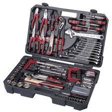

Szerszám
A szerszám különböző munkadarabok, anyagok megmunkálására szolgáló eszköz
Lehet kézi vagy gépi.
A szerszám lényege, hogy mechanikai előnyt hordoz magában, a szerszám használójának olyan fizikai képességet nyújt, amellyel a felhasználó természeti adottságai miatt egyébként nem rendelkezik
A legtöbb alapszerszám egyszerű gép.
Például a feszítővas ugyanolyan funkcióval rendelkezik, mint az emelő.